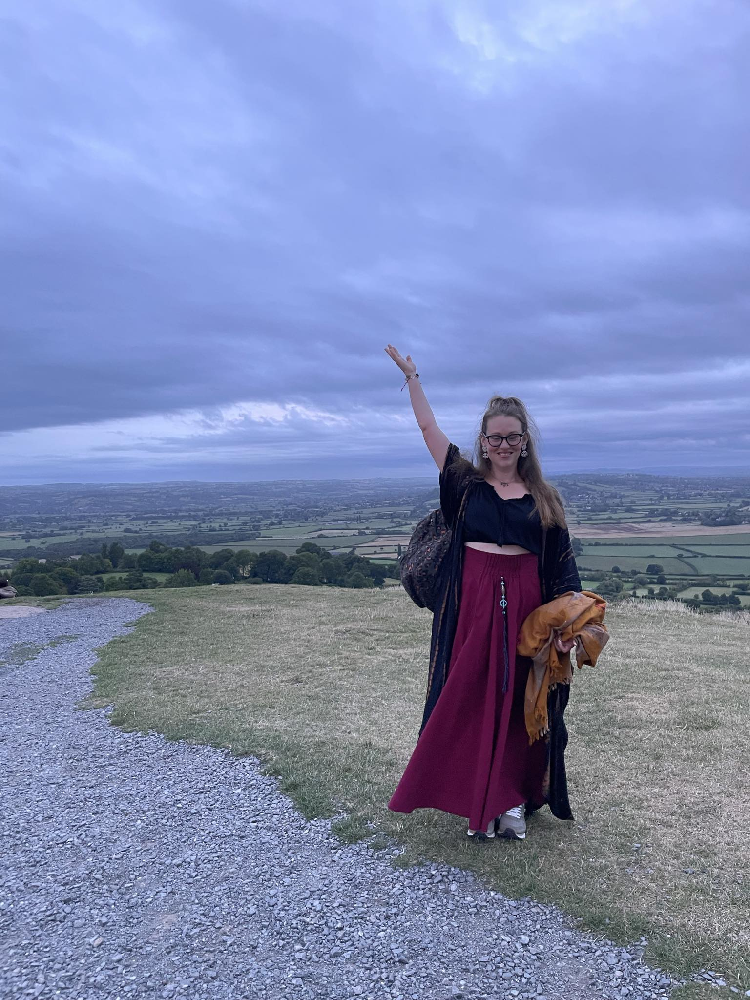
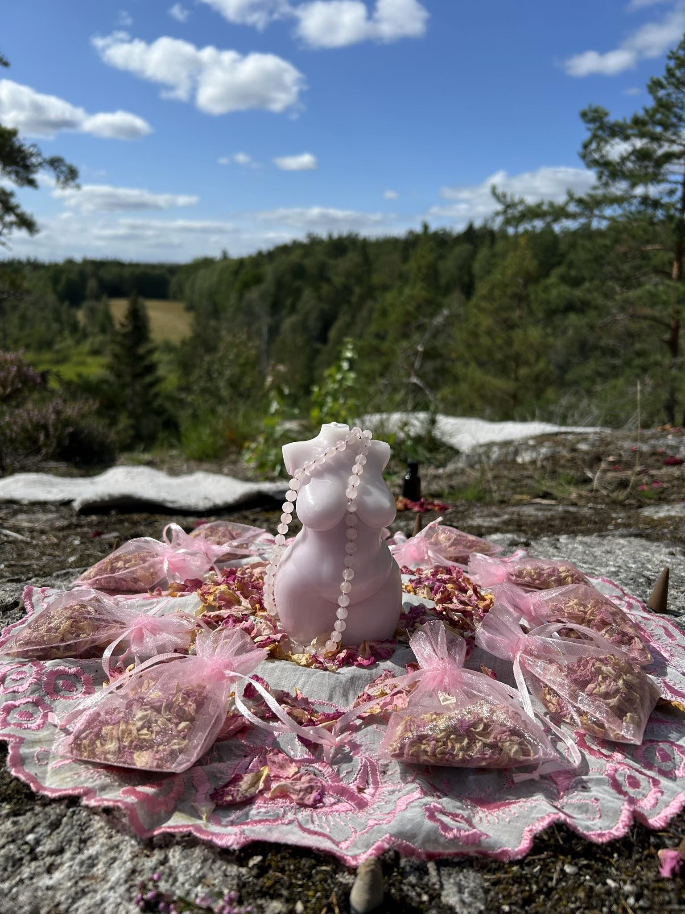
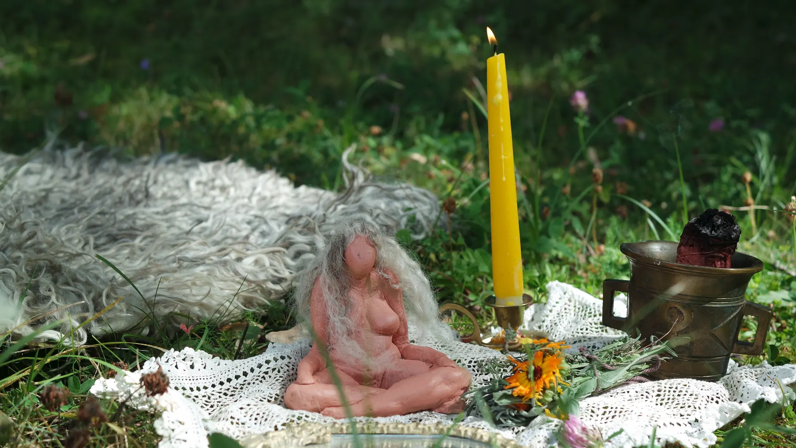
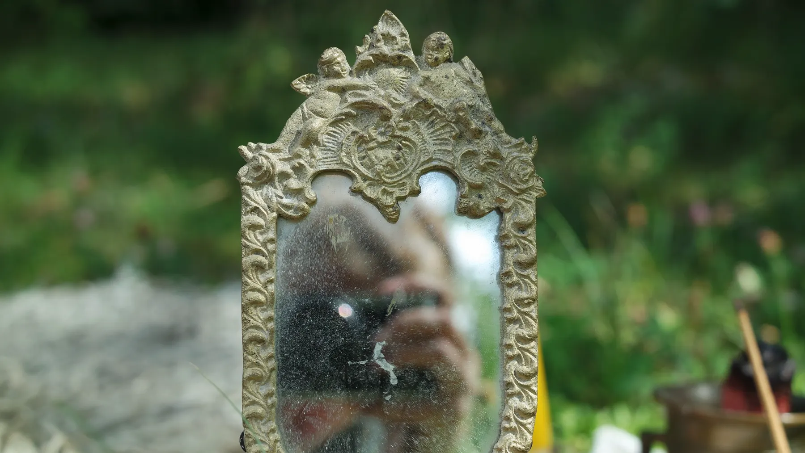
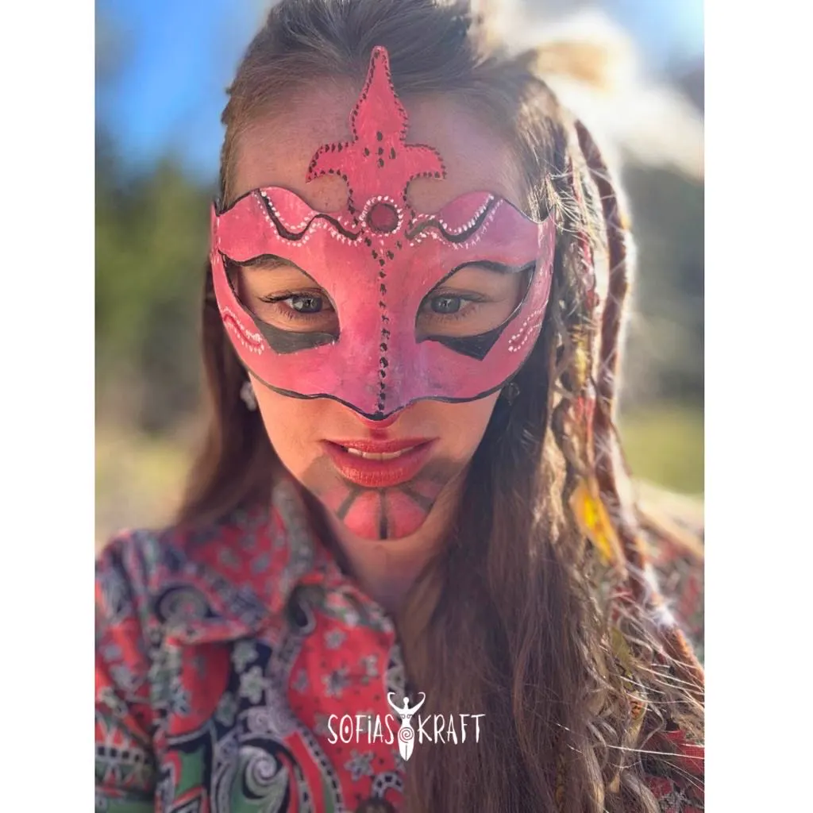

01
Systercirkel · 2026
Samlas i
Kolmården.
Fem söndagar med årstidsbunden ceremoni, naturkontakt och naturkraft. Kursen är fullbokad.

Jordprästinna · Medium · Lärare
Ceremonier, kurser och enskilda möten där det teoretiska möter det intuitiva — i nära kontakt med naturens hållande kraft.
Utforska vägen↓FÖRANKRAD I JORDEN · ÖPPEN MOT MYSTERIET
✦
Ceremonin hjälper oss att påminna oss om vår inneboende kraft och fylla på inför nästa steg på livets väg.
KURSER & MÖTEN
Trygga, mindre grupper och personliga möten för naturkontakt, magisk praktik och inre utveckling.
Systercirkel · 2026
Fem söndagar med årstidsbunden ceremoni, naturkontakt och naturkraft. Kursen är fullbokad.
Gudinnans årshjul · 2027
En fördjupad vandring genom gudinnerliga arketyper, nordisk animism, element, ritual och mystik.
Personlig ceremoni
För avslut, nya begynnelser, sorg, firande eller en livsövergång — utformad efter det som kallar.
PÅ GÅNG
Det finns rum som bara öppnas när tiden är mogen.
När året vänder sig mot mörkret samlas vi för att möta det som sällan får plats i vardagen, den djupa vilan, det intuitiva, det ordlösa och den feminina kraft som lever bortom det synliga.
Temple of Sacred Rest är ett tillfälligt gudinnetempel där flera prästinnor möter dig i ceremoni.
Vad som sker där inne går inte helt att förutsäga.
Genom beröring, trumma, sång, guidade inre resor och intuitivt arbete följer vi det som uppstår i rummet. Du behöver inte komma med en intention. Du behöver inte veta vad du söker.
Kanske är det något annat som söker dig.
Templet tillägnas Den mörka modern, hon som bär många namn och många ansikten. Hel. Hekate. Cerridwen. Haggan. Benkvinnan. Stenkvinnan. Den gamla viskvinnan.
Hon som vakar vid tröskeln.
Hon som känner vägen ner.
Hon som vet att vila är en form av kraft.
Vi bjuder dig att kliva över tröskeln och låta mörkertiden ta emot dig.
Kom och låt dig vaggas in i mörkertiden tillsammans med oss.
PlatsArt of Stillness, Tomtebogatan 21, Stockholm
NärSöndag 22 november, kl. 14.00–16.30
Biljett380 kr. Biljetten är inte återbetalningsbar men kan överlåtas till en vän om du får förhinder.

CEREMONIELLT LEDARSKAP
Livet rör sig genom oss, med allt mellan himmel och jord. Vissa händelser förändrar oss i grunden. Dessa stunder kan behöva hedras, bäras, sörjas eller firas.
Med lyhörd närvaro skapar jag rum där det heliga får ta plats. En ceremoni kan innehålla guidad meditation, trumresor, intuitiv vägledning, orakelkort, snippsauna och örternas läkande kraft.
Vi kan vara i skogen, i mitt tempelrum eller hemma hos dig.
Fråga om ceremoni →OM SOFIA
En längtan efter magi och ett eget rum för vila, läsande och inre resor. År 2020 avslutade jag en tvåårig mediumutbildning hos Helen Engström. Därefter vandrade jag tre år med Prästinnan, ledd av Rebecca Tiger, och dedikerade mig som jordprästinna.
Sedan dess har jag välkomnat människor till ceremonier, privatsittningar och guidade meditationer. Min erfarenhet som socionom, teaterpedagog och folkhögskolelärare möter här det intuitiva och hjärtbaserade.
Jordprästinna · Medium · Socionom & lärare
Möt mig →


KONTAKT & BOKNING
Hör av dig med frågor, bokningsförfrågningar eller funderingar kring ceremonier och kurser.
vindshaxan@gmail.com ↗